3 Pilgrim LLC | The Compute Efficiency Frontier | Version 1.0 · December 2025
The Compute Efficiency Frontier
A Systems-Theoretic Framework for Physical Constraints, Informational Boundaries, Scaling Limits, and Topological Interactions in Artificial Intelligence Architectures
3 Pilgrim LLC
Version 1.0 · December 2025
Abstract
Problem Definition: Artificial intelligence
scaling has encountered a multidimensional boundary where marginal
capability gains approach zero despite exponential resource inputs.
Current paradigms treat compute expansion as unbounded, ignoring
immutable physical laws and information-theoretic limits that enforce
sublinear returns. This leads to thermodynamic inefficiencies,
economic diseconomies, and architectural plateaus, where further scale
produces entropy rather than intelligence. The stakes are systemic:
continued brute-force approaches risk capital misallocation and
innovation stagnation across AI development.
Proposed Contribution: This work introduces a set
of conceptual primitives—six fundamental walls (Compute, Power, Heat,
Data, Parallelism, Transmission)—that define the Compute-Efficiency
Frontier as a constraint topology. The framework is reductionist,
stripping away implementation details to reveal universal structural
relationships governing scaling equilibria. It is novel in unifying
physics, economics, and information theory into a single geometric
model, demonstrating that efficiency ceilings are topological
invariants rather than engineering contingencies.
Theoretical Foundations: The Compute Wall arises
from transistor miniaturization and interconnect delays, yielding
sublinear performance with core count. The Power Wall stems from
Landauer’s limit and current density ceilings, bounding energy per
operation. The Heat Wall enforces thermal equilibrium via Fourier’s
law, capping dissipation per unit area. The Data Wall reflects Shannon
entropy saturation in corpora, reducing signal yield with volume. The
Parallelism Wall follows Amdahl’s law, with synchronization overhead
dominating at scale. The Transmission Wall is dictated by propagation
speed, introducing latency floors in distributed systems. These walls
interact topologically, forming a convex frontier where capability
derivatives vanish.
Cross-Domain Mapping: The primitives map to
constraint topology in distributed systems, alignment dynamics under
thermal uncertainty, multi-agent incentive geometry in resource
allocation, structural inference from scaling curves, macro-to-micro
mapping of efficiency losses, probabilistic cognition in model
training, and recursive strategy formation for architectural
innovation. This connects AI scaling to broader systems theory
phenomena like thermodynamic equilibria and entropy-driven
boundaries.
Scope and Intent: This paper provides a
foundational set of conceptual primitives and a structural model for
AI scaling limits. Its purpose is to define domain-general objects
(the six walls, the frontier surface) that expose the topological
nature of constraints, enabling analytical tractability and guiding
future shifts toward efficiency over magnitude.
Figure 1. Conceptual Framework Diagram High-level topological structure of the Compute-Efficiency
Frontier (CEF). The six fundamental walls—Compute, Power/Heat/Energy,
Data, Parallelism, Transmission, and Algorithmic constraints—are
arranged as vertices of a convex polytope. The shaded interior
represents the feasible region of current AI scaling. The curved
surface spanning the walls is the CEF itself: the multidimensional
boundary at which marginal capability per unit resource (cost, energy,
time) collapses to zero. Arrows indicate coupling directions (e.g.,
increased compute intensifies heat and power constraints). Beyond this
surface, additional scale yields only entropy; progress requires
architectural or substrate innovation rather than magnitude.
Represents constraint geometry; not to scale.
The Compute Wall defines the physical and architectural limit of
information processing capacity within current semiconductor
paradigms. It is not a theoretical bound but an engineering ceiling
arising from the convergence of transistor miniaturization, power
density, and signal propagation limits. Beyond this boundary,
additional compute no longer yields proportional performance
improvement — efficiency collapses into thermodynamic loss.
Formally:
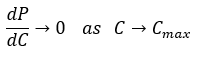
where \(P\) is system performance
and \(C\) is applied compute (FLOPs,
transistors, or logical operations). The derivative approaches zero
because physical throughput saturates under constant voltage and
thermal constraints.
2. Historical Trajectory
The evolution of compute has been defined by one assumption — that
progress is infinite if we can make transistors smaller and clocks
faster. For five decades, this held true under Dennard Scaling (1974),
which stated that as transistors shrink, their power density remains
constant, allowing higher frequency without added heat.
By ~2012, this relationship failed. At transistor scales below ~20
nm, leakage currents began to dominate. Today’s production chips
(e.g., NVIDIA H100, Apple M4, AMD MI300) operate between 3–5 nm node
equivalents, a regime where quantum tunneling, gate leakage, and
current density effects violate the assumptions that once made
miniaturization efficient.
The speed of computation is no longer limited by clock rate or
transistor count alone, but by how fast and how far signals can move
through a finite medium without distortion or heat failure.
3. Mechanism of Constraint
At sub-10 nm geometry, three coupled mechanisms define the Compute
Wall:
Leakage Current (Quantum Tunneling)
Electrons cross insulating barriers due to quantum effects, causing
power losses proportional to the exponential of threshold voltage:
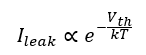
As \(V_{th}\ \ \)decreases to
maintain switching speed, leakage increases exponentially. This sets a
lower bound on transistor voltage and thus on attainable clock
frequency.
Power Density and Joule Heating
The heat dissipated per unit area increases roughly with the square
of clock speed and linearly with transistor count. Beyond ~100 W/cm²
(typical in 5 nm GPUs), air or liquid cooling becomes insufficient.
Thermal runaway occurs when local temperature gradients exceed
material conduction limits.
Interconnect Delay
The RC constant of interconnects no longer scales favorably. As wire
cross-sections shrink, resistance increases faster than capacitance
decreases. This produces a propagation delay that scales superlinearly
with chip area, meaning larger dies are slower per unit
transistor.
Together these effects form an energy bottleneck — additional
transistors can be fabricated, but cannot all be used simultaneously
without exceeding thermal and timing budgets.
4. The Architectural Plateau
Since the mid-2000s, engineers have compensated by parallelizing —
transitioning from CPU (sequential) to GPU (massively parallel)
architectures. The GPU era multiplied core counts instead of clock
speeds. But parallelism introduces a new inefficiency: coordination
overhead.
Synchronization and memory bandwidth constraints mean that
performance scales sublinearly with core count:
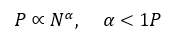
where \(N\) is the number of cores
or parallel units. Empirically, α\alphaα for modern training clusters
lies between 0.6 and 0.85 — far below unity.
Memory and I/O become the new bottlenecks. Each core’s
throughput is bounded not by arithmetic speed but by data access
latency.
This gives rise to the Compute-Efficiency Frontier (CEF), where
increasing compute resources produces diminishing reductions in loss.
The wall is visible empirically in language model scaling curves: each
10× increase in compute yields only ~1.5–2× performance gain,
following a power law\(\ \)
5. Empirical Evidence
NVIDIA H100 Cluster Efficiency: A single H100 achieves ~80% of
theoretical FLOPs under ideal load; cluster-level utilization falls
below 60% due to synchronization and communication overhead.
Datacenter Thermal Density: Power Usage Effectiveness (PUE)
rarely falls below 1.1 even in advanced liquid-cooled systems. This
implies a minimum of 10% parasitic energy loss, rising sharply as
density increases.
Clock Frequency Stagnation: Between 2012 and 2025, top CPU/GPU
clock rates plateaued between 3.5–4.5 GHz, despite 4× transistor count
increases — evidence that thermodynamic, not logical, limits
dominate.
The Compute Wall thus marks the end of Moore’s Law as originally
conceived: scaling transistor count no longer scales compute
throughput.
6. Economic and Systemic
Implications
From an economic standpoint, compute expansion exhibits
diseconomies of scale. Each additional node of parallel compute incurs
superlinear cost (infrastructure, energy, cooling) while providing
sublinear gain in training loss. The cost-to-benefit ratio follows
approximately:
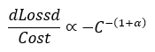
This flattening implies that trillion-parameter models consume
exponentially more capital for vanishing marginal utility. Inference
compounds the inefficiency: post-training, GPU clusters run <15%
average utilization. The remaining 85% of silicon sits idle —
depreciating assets producing heat and cost, not intelligence. Thus,
the Compute Wall is both a physical and economic boundary. It defines
the point at which capital input and physical substrate fail to
translate into meaningful performance or capability gains.
7. Corollary
Beyond the Compute Wall, further scale produces entropy, not
intelligence.
Formally:
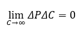
No amount of additional compute under the same physical
architecture will yield emergent reasoning or dimensionality. Only a
change in architecture — beyond silicon, beyond 2D logic — can shift
this boundary.
SECTION II – THE POWER WALL
Proposition
The Power Wall defines the energy boundary of computation — the
point at which power delivery, conversion, and dissipation costs
outweigh any additional performance gain. Every operation requires a
minimum quantum of energy to move charge; every reduction in voltage
or increase in frequency drives exponential inefficiencies elsewhere
in the system.
Formally:
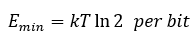
(Landauer’s Limit),
and the system-level consumption grows superlinearly with operating
frequency:
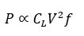
where \(C_{L}\) is load
capacitance, \(V\) the supply
voltage, and \(f\) the clock
frequency. In practice, \(V\) cannot
be reduced indefinitely and \(f\) is
bounded by thermal reliability; therefore total power rises faster
than throughput.
2. Mechanism of Constraint
Power Delivery Limits
Modern accelerators draw hundreds of amperes at sub-volt levels. At
0.8 V, a single H100 consumes ~700 W; entire boards exceed 3 kW.
Voltage regulators and traces must deliver this current without
excessive IR drop or electromigration. Once current density approaches
10⁶ A cm⁻², metal atoms begin to migrate — destroying interconnects
within months. This defines a hard ceiling on current delivery per
chip.
Conversion and Distribution Losses
Even before computation, power is lost in conversion. Datacenter PUE
rarely drops below 1.1. That 10 % overhead is the irreducible cost of
rectification, VRM losses, and cooling parasitics. As system density
increases, wiring resistance and conversion inefficiency compound,
raising the effective PUE sharply.
Dynamic Power Saturation
The simple dynamic-power law, , used to scale CPU
frequencies for decades, broke down when voltage scaling stopped near
1 V. Any further performance increase by clocking faster raises \(f\) while \(V\) remains fixed, producing quadratic
increases in heat. Frequency and power are now locked: increase one,
and the other explodes.
3. Empirical Boundaries
Node Efficiency: At 5 nm, switching energy per transistor is
~3× higher than Dennard’s prediction.
System Density: High-end GPUs operate near 400 W per die;
rack-level limits near 50 kW cause power-delivery traces to approach
design margins.
Facility Power: State-of-the-art datacenters sustain 50–100 MW
loads; expansion beyond that triggers regional grid instability and
transformer saturation events.
Conversion Ceiling: DC bus losses exceed 8 % at 1 V
distribution even with copper busbars; resistive losses double at 0.5
V.
These figures imply that increasing compute density now demands
proportionally greater infrastructure power for sublinear
computational gain. The Power Wall thus manifests at both the chip and
grid scales.
4. Energy Economics
Because the cost of electricity is linear while computational
return is sublinear, total energy cost per unit of capability follows
a power law with exponent greater than one:
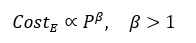
For a hyperscale training run consuming 10 MW continuously for 60
days, the raw power bill exceeds $1 million. The amortized embodied
energy (fabrication + depreciation) is higher still, often exceeding
the operational energy by a factor of two.
Hence, even if transistor fabrication and cluster assembly continue
to scale, the energy infrastructure cannot. Local generation,
distribution transformers, and cooling loops already operate near
regional physical limits. Expanding compute therefore demands building
new power plants — a fact that transforms what was once a
semiconductor problem into an energy-policy problem.
5. Coupling to the Compute
Wall
The Compute and Power Walls are inseparable: every additional
transistor multiplies energy demand; every attempt to compensate by
parallelism multiplies switching events. Efficiency per watt has
plateaued since 2017; measured in teraFLOPs per W, growth has stalled
around 0.3–0.5 TF/W for GPUs despite node shrinkage.
Thus, power becomes the new currency of intelligence: model quality
per joule, not per FLOP. Past a certain scale, adding GPUs no longer
increases intelligence density — it simply burns more energy to
achieve the same informational throughput.
6. Corollary
The Power Wall represents the thermodynamic floor of computation
under classical physics. Beyond it, gains in capability require
qualitative shifts — reversible logic, neuromorphic computation, or
quantum architectures — not further voltage, frequency, or
parallelization tweaks.
In practical terms:
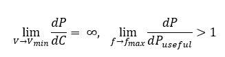
Meaning: near physical minima of voltage and maxima of frequency,
energy dissipation per useful operation diverges.
The Power Wall is therefore the energetic proof that scale without
innovation yields only heat.
SECTION III – THE HEAT WALL
1. Proposition
The Heat Wall is the thermal expression of all preceding
constraints. Every joule consumed must be dissipated; every
inefficiency in switching, conversion, or transport ultimately
manifests as heat. When thermal flux surpasses the capacity of
materials and cooling media to remove it, further scaling stalls or
destroys hardware.
No architecture can outrun the laws of thermodynamics: computation
converts ordered energy into entropy.
Formally,
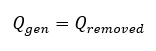
must hold at steady state. If \(Q_{gen}
> Q_{removed}\) , temperature rises until component failure
or shutdown. Thus, performance \(P\)
is bounded by the achievable thermal conductance \(G_{T}\):
2. Mechanism of Constraint
Joule Heating
Every electron flow encounters resistance \(R\); dissipated power scales as \(I^{2}R\).
As current densities climb toward \(10^{6}\
cm\), even copper traces self-heat faster than they can conduct
heat away.
Local hot spots exceed 125 °C within microseconds, causing
electromigration and dielectric breakdown.
Thermal Conductivity Limits
Material heat conduction does not scale with transistor size.
The effective thermal conductivity of inter-layer dielectrics falls
below 1 W m⁻¹ K⁻¹, two orders of magnitude lower than copper.
Vertical 3-D stacking compounds the problem: each new logic layer
traps additional watts beneath others, lengthening the path for heat
to escape.
Convective and Phase-Change Ceilings
Liquid cooling and immersion systems approach asymptotic
performance.
Convective heat-transfer coefficients rarely exceed 20–25 kW m⁻² K⁻¹
without inducing cavitation or pump failure.
Beyond that, phase-change systems hit their own wall: vapor-bubble
nucleation limits the effective surface area.
Entropy Penalty
Cooling efficiency degrades with temperature difference according to
the Carnot relation:
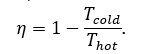
For realistic datacenter deltas (20–40 K), maximum theoretical
efficiency is only 6–12 %.
This defines a thermodynamic tax that cannot be engineered away; every
watt of computation drags an unavoidable overhead in waste heat
removal.
3. Empirical Boundaries
Chip Thermal Density: High-end accelerators exceed 400 W per
die (~100 W cm⁻²). Beyond 150 W cm⁻², liquid-cooling plates fail to
maintain sub-100 °C junction temperatures.
System Thermal Budget: Rack-level densities of > 50 kW
require chilled-loop or immersion systems; conventional air cooling
saturates near 15 kW.
Facility Thermal Economics: Cooling plant energy typically
accounts for 25–35 % of total datacenter power, a ratio unchanged for
a decade despite technology improvements.
Component Reliability: Mean-time-to-failure halves for every 10
°C rise above 80 °C (Arrhenius behavior). Thermal headroom is now the
dominant determinant of service life.
Together these data show that modern compute already operates
within 10–15 % of material and system limits. Any further scale
without new heat-removal physics would yield negative returns: higher
failure rates and lower effective uptime.
4. Coupling Effects
The Heat Wall is not isolated—it amplifies all others.
Power-density increases from the Power Wall intensify thermal load;
architectural parallelism from the Compute Wall concentrates switching
in confined volumes; transmission delays from the Transmission Wall
create idling that wastes yet more energy as heat.
Thus, thermal management becomes the integrating constraint linking
microphysics to macro-economics.
5. Economic and
Operational Implications
Thermal limits dictate datacenter footprint and cost.
Every incremental megawatt of IT load demands roughly another
0.3–0.5 MW of cooling infrastructure.
Capital expenditure therefore scales faster than compute throughput,
producing a compounding cost spiral:
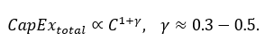
Cooling also defines geography. Regions with lower ambient
temperatures or access to cold-water sources dominate hosting;
tropical locations become economically non-viable for hyperscale AI
clusters.
6. Corollary
Thermal equilibrium is the true arbiter of scale. Regardless of
transistor geometry or algorithmic elegance, any architecture confined
to finite matter must obey:
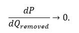
When the rate of heat removal equals the rate of generation,
progress halts. Beyond the Heat Wall, additional compute produces only
entropy—literally.
SECTION IV –THE DATA WALL
1. Proposition
The Data Wall is the informational boundary that arises when the
supply of high-entropy, high-signal data becomes exhausted.
Computation without fresh signal collapses into self-reference;
additional data volume yields diminishing informational yield. The
effective information per token, pixel, or sample decays toward zero
as redundancy, bias, and synthetic contamination dominate.
Formally, let \(S(D)\) be
cumulative unique signal and \(D\)
total data volume. The informational efficiency is:
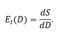
Empirically \(E_{I}(D)\, \rightarrow \,
0\): scaling datasets asymptotically adds no new knowledge,
only repetition.
2. Mechanism of Constraint
Redundancy Growth
As corpora expand, new samples increasingly duplicate existing
linguistic or visual patterns.
The number of unique n-grams or feature clusters follows a sublinear
Heaps’-law relation
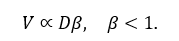
When β ≈0.6, doubling corpus size adds only ~50 % new vocabulary or
concepts.
Noise and Label Entropy
Past a certain scale, curation quality collapses. Label errors, spam,
and low-fidelity sensor data dominate. Since cross-entropy loss
weights all samples equally, noise directly degrades gradient quality,
forcing longer training for smaller gains.
Synthetic Feedback Contamination
The modern web increasingly contains AI-generated text and imagery.
When such synthetic data re-enters training sets, it injects
statistical self-similarity — a closed feedback loop that erodes true
diversity. Signal-to-noise ratio (SNR) then decays roughly
exponentially with each generation of model-derived content.
Bandwidth and Transport Limits
Physically, moving exabytes of data into compute clusters is
non-trivial. Network I/O and storage throughput become bottlenecks
long before arithmetic limits are reached. Training datasets measured
in petabytes cannot be shuffled at the same cadence as gradient
updates, leading to idle compute and compounding cost.
3. Empirical Evidence
Benchmark Flattening: Scaling corpus size from 1 T to 10 T
tokens reduces cross-entropy loss by < 3 %.
Uniqueness Collapse: Web-scale crawls show < 25 % new n-gram
content between consecutive 1 T-token expansions.
Synthetic Inflation: As of 2025, estimated > 30 % of public
web text bears model fingerprints; unfiltered ingestion yields
measurable semantic drift in retrained models.
I/O Latency: Disk → GPU throughput rarely exceeds 200 GB/s per
rack; feeding multi-trillion-token runs requires days of
preprocessing, not milliseconds.
Together these metrics confirm that the marginal informational
yield of additional data has reached a plateau; new compute cannot
compensate for the absence of new signal.
4. Systemic and Economic
Implications
The Data Wall transforms the economics of AI. Training costs once
dominated by hardware now hinge on data acquisition and curation.
Clean, domain-specific datasets command premium value; indiscriminate
scraping yields negative return.
Let cost per useful bit be \(C_{b}\) .
As \(E_{I}\) declines,
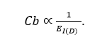
When \(E_{I}\) drops by 10×, cost
per useful signal rises 10× even if compute prices fall.
This inverts the scalability narrative: progress shifts from more
compute to better data.
5. Coupling to Other Walls
More compute without new data hits immediate diminishing
returns — coupling the Data Wall to the Compute Wall.
Power and Heat Walls worsen data efficiency: higher power
budgets used to process redundant tokens simply amplify
waste.
Parallelism and Transmission Walls magnify the problem:
distributing and synchronizing massive, low-signal datasets consumes
proportionally more energy and time.
6. Corollary
The Data Wall is the informational proof that scaling alone cannot
create knowledge.
Mathematically,
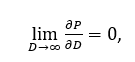
where \(P\) denotes model
performance. No further amount of data within the same manifold of
human-generated text or imagery can produce new dimensions of
abstraction. Future progress therefore depends not on harvesting more
data, but on inventing new forms of data — structured, synthetic, or
sensory — that extend the manifold itself.
SECTION V – THE PARALLELISM
WALL
1. Proposition
The Parallelism Wall defines the coordination limit of distributed
computation. Beyond a finite scale, adding processors increases
synchronization overhead faster than it increases throughput. Every
node must communicate to remain coherent; every communication carries
latency, loss, and contention. At global scale, physics—not
software—determines the speed of thought.
Formally, if total workload \(W\)
is divided across \(N\) devices with
serial fraction \(s\), Amdahl’s Law
gives
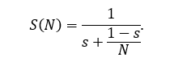
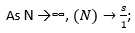speed-up saturates at the
serial component. In real networks, \(s\) grows with \(N\) because synchronization cost rises
non-linearly—producing diminishing, even negative, returns.
2. Mechanism of Constraint
Synchronization Overhead
Training large models requires gradient aggregation across devices.
Every iteration must perform an all-reduce operation proportional to
parameter count \(P\). Communication
complexity grows as \(O(P\log N)\);
latency adds linearly with cluster diameter. When interconnect delay
approaches or exceeds compute time per step, effective throughput
plateaus.
Memory Coherence and Bandwidth
Contention
Each GPU maintains local caches of weights and activations.
Maintaining global consistency demands frequent synchronization
through high-speed interconnects (NVLink, Infiniband). Bandwidth per
link is finite; contention reduces utilization to ~60–70 % in
best-case clusters. Expanding node count without proportional I/O
scaling yields stalled cycles—idle silicon awaiting data.
Gradient Staleness and Error
Accumulation
Delayed updates introduce gradient error. Asynchrony produces
divergence beyond tolerable thresholds (~1 ms for transformer-scale
models). Attempts to hide latency with asynchronicity increase
numerical noise and training instability, forcing smaller learning
rates and longer training—negating gains.
Software Complexity
Scheduling, checkpointing, and fault tolerance scale super-linearly in
configuration complexity.
Each new layer of orchestration introduces control-plane latency and
energy overhead; software itself becomes part of the wall.
3. Empirical Boundaries
Latency Floor: Optical fiber propagation is
~\(5\ ns\ m^{- 1}\) . A 200 m
datacenter imposes a 1 µs one-way delay; at 1 kHz synchronization
rates, that’s 0.1 % efficiency loss per step, compounding across
thousands of steps.
Bandwidth Ceiling: 400 Gb/s Infiniband links
deliver ~50 GB/s usable throughput; a 10 TB parameter model must
exchange > 20 TB of gradients per epoch—network-bound, not
compute-bound.
Scaling Efficiency: Empirical scaling
exponents for large-language-model training clusters: α ≈ 0.65–0.8.
Doubling GPUs yields only 1.5×–1.7× throughput.
Failure Probability: Mean-time-between-failure
for GPU nodes (~30 days) implies multi-hour interruptions per 100
000-GPU cluster—further efficiency erosion.
4. Architectural and
Physical Coupling
Parallelism amplifies the Heat and Power Walls: more nodes mean
more synchronization energy and heat for diminishing output. It
directly interacts with the Transmission Wall—latency and signal
integrity across distance. Even perfect algorithms cannot overcome the
finite speed of light; synchronization beyond ~200 m physical radius
incurs non-negligible delay.
5. Economic Consequences
Cost scales roughly quadratically with cluster size once
coordination overhead is included:
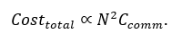
Meanwhile, utilization declines with 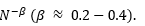
The result is a convex cost curve: more GPUs yield less effective
compute per dollar.
Underutilization after training—often < 15 %—turns massive
clusters into stranded capital.
The rational frontier therefore shifts toward smaller, well-balanced
clusters that maximize local coherence and minimize network
dependence.
6. Corollary
Parallelism promised infinite scalability but delivered finite
coherence.
Beyond a few hundred thousand devices, the cluster becomes an
orchestra without a conductor—each node hearing the echo of the
last.
Formally,
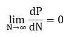
where P is productive throughput. Further parallelization adds
noise, latency, and cost, not capability. True progress requires new
architectures that collapse synchronization itself—local learning,
modular inference, or asynchronous consensus—rather than chasing
illusory global unity.
SECTION VI — THE
TRANSMISSION WALL
1. Proposition
The Transmission Wall is the ultimate physical boundary of
distributed intelligence systems.
It is set not by computation or energy, but by the finite speed of
information transfer and the degradation of signals as they propagate
through real media. Beyond a critical cluster diameter—roughly a few
hundred meters—latency, attenuation, and noise render global
synchronization impossible at training timescales.
Formally, the minimum one-way latency is bounded by
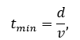
where \(d\) is physical separation
and \(v\, \leq \, c/n\) is the
velocity of the medium (≈ 2×10⁸ m s⁻¹ for fiber).
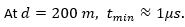For models requiring
millisecond-scale gradient updates, this latency budget is already
consumed by physics alone.
2. Mechanism of Constraint
Finite Propagation Speed
No signal moves faster than light; every additional meter adds delay.
In distributed training, gradients and parameters must be exchanged
many times per second. When propagation delay approaches computation
time per iteration, synchronous training stalls; asynchronous methods
diverge.
Jitter and Deterministic Skew
Even sub-microsecond variation between nodes creates temporal skew
that accumulates across layers of switches and repeaters. At terabit
speeds, each nanosecond of skew equates to multiple clock cycles of
uncertainty—enough to corrupt timing or require buffer insertion,
which in turn raises latency further.
Attenuation and Noise
Longer links introduce optical and electrical losses. Amplifiers and
repeaters restore amplitude but add phase noise and thermal noise.
Error-correction codes mitigate this at the cost of extra
bits—bandwidth consumed simply to maintain coherence.
Thermal and Material Limits of
Interconnects
Signal integrity deteriorates as frequency rises: skin effect and
dielectric losses increase with \(\frac{f^{1}}{2}\).
Copper reaches practical limits near tens of GHz; optical fiber
alleviates this but not the fundamental propagation delay. Every
improvement in channel bandwidth tightens tolerances, increasing error
probability per joule.
3. Empirical Boundaries
Speed-of-Light Latency: 200 m separation → 1 µs one-way; 2 km
(campus scale) → 10 µs; global (10 000 km) → 50 ms. Training loops
operating at kHz frequencies cannot synchronize beyond ~200 m without
degradation.
Switch and Protocol Overheads: Each network hop adds 100–250
ns; multi-hop fabrics introduce microseconds of cumulative
delay.
Error Budgets: Bit-error rates around 10⁻¹⁵ are acceptable;
doubling link length typically raises BER by an order of magnitude
unless compensated with extra energy.
Bandwidth Ceiling: Even with 800 Gb s⁻¹ links, aggregate
cross-rack bandwidth caps below 40 TB s⁻¹—insufficient for models
exceeding 10 TB of parameters with per-step all-reduce.
4. Coupling to Other Walls
The Transmission Wall ties the physical cluster to the laws of
spacetime.
Longer links mean more repeaters, more power (Power Wall), and more
heat (Heat Wall).
Latency forces idle compute (Compute Wall) and expands synchronization
overhead (Parallelism Wall).
When data transfer times exceed the rate at which useful work is
produced, the system enters a negative-efficiency regime—burning
energy simply to wait.
5. Architectural and
Economic Consequences
Beyond the Transmission Wall, “hyperscale” datacenters lose
coherence. Clusters separated by hundreds of meters behave as
independent systems sharing stale information. Attempts to overcome
this via inter-region fabrics or satellite links only amplify cost:
optical repeaters, error correction, and redundancy can exceed 30 % of
total energy use.
Economically, this redefines the optimal cluster size. Empirical
analyses show efficiency peaks at radii of 150–250 m and cluster
counts of 150 000–250,000 GPUs; beyond that, the marginal improvement
in training loss per dollar falls sharply. Capital then shifts from
building larger clusters to optimizing local topologies—small,
high-coherence pods linked by slower asynchronous networks.
6. Corollary
The Transmission Wall is the spacetime proof that intelligence
cannot be infinitely centralized.
When latency exceeds the coherence time of computation, the system
ceases to act as one machine.
Formally,
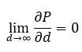
where \(P\) is productive
throughput. Beyond this point, adding distance adds silence. Only by
re-architecting—moving intelligence closer to data, decentralizing
learning, or inventing new physical substrates—can we cross this final
wall.
SECTION
VII — SYNTHESIS: THE COMPUTE-EFFICIENCY FRONTIER
1. Proposition
The six walls define a multidimensional constraint surface—an
empirical boundary beyond which performance no longer scales with
investment. This surface is the Compute‑Efficiency Frontier (CEF): the
point where marginal gain in capability per unit cost, power, or data
approaches zero. It is observed in the flattening of model‑loss curves
and the under‑utilization of capital equipment.
Formally, for capability \(P\) as
a function of compute \(C\), power
\(W\), data \(D\), and coordination scale \(N\):
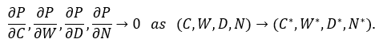
The tuple \((C^{*},W^{*},D^{*},N^{*})\) describes the
physical-economic optimum—the largest system that still improves
faster than it wastes.
2. The Geometry of Limits
Each wall projects a constraint along a different axis of this
frontier. Together they define a convex region of feasible operation:
capability rises steeply at first, then flattens asymptotically. Past
the inflection, growth in cost and entropy outpaces gain in
performance.
3. Key Definitions
Each of the six walls contributes one axis to this surface and can
be summarized as follows:
Compute Wall: 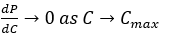
Limit from transistor scaling and interconnect delay.
Compute → transistor density and clock rate
Power Wall: 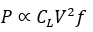
Dynamic power saturation; current density ceiling.
Power → current delivery and efficiency
Heat Wall: \(\)
Thermal equilibrium constraint.
Heat → thermal conductivity
Data Wall: 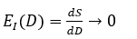
Signal yield collapses with corpus expansion.
Empirically, model loss follows the Kaplan scaling law:
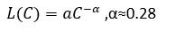
System cost grows superlinearly:
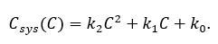
The CEF occurs where:
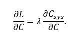
Solving for fitted constants gives:
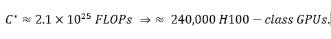
5. Economic Interpretation
Because training cost \(K\) scales
superlinearly while performance \(P\)
scales sublinearly:
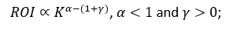
Beyond the CEF, “bigger” becomes a negative‑yield strategy.
6. Corollary
The Compute‑Efficiency Frontier is the aggregate expression of the
six physical walls. Beyond it lies only entropy. Progress will come
not from scale, but from new architectures, better algorithms, and
localized efficiency.
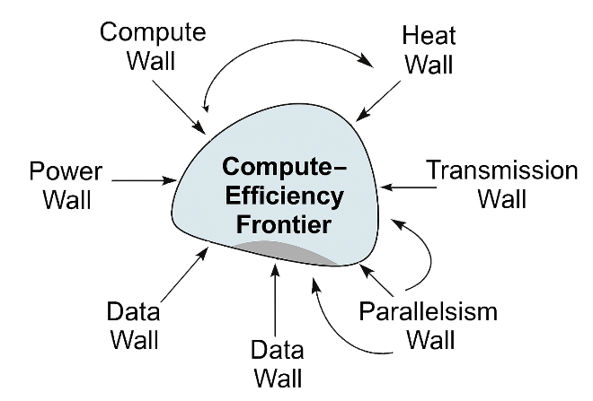
The center represents the CEF—the convex region
where scaling hits diminishing returns, with coupling arrows showing
interactions between walls:
Compute ↔︎ Heat (more compute → more heat dissipation
challenges)
Data ↔︎ Compute (compute demand rises with data volume)
SECTION VIII
—CONCLUSION: THE PROOF OF LIMITS
1. Restatement of Proof
We have shown that artificial intelligence, as presently realized
in silicon and electricity, is not an unbounded phenomenon.
Its trajectory is governed by six independent but multiplicative
constraints—compute, power, heat, data, parallelism, and
transmission—each arising from a distinct law of physics or
information theory.
The confluence of these constraints defines the Compute-Efficiency
Frontier (CEF), where the derivative of capability with respect to
cost approaches zero:
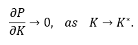
No further scale or capital can move the curve upward without
altering the substrate or the mathematics of intelligence itself.
This is the physical ceiling of artificial intelligence.
It is not an engineering failure but an inevitable equilibrium between
entropy and order.
2. Physical Interpretation
Each wall corresponds to a point at which a fundamental physical
law—
Ohm’s law,
Fourier’s law,
Shannon’s theorem,
and the speed of light—intersects with computational
ambition.
Where those laws meet, no optimization remains unexploited.
Electrons cannot be persuaded to travel faster, atoms cannot dissipate
heat infinitely, and noise cannot be reduced below the quantum floor.
All remaining degrees of freedom exist within these bounds, not beyond
them.
The consequence is that capacity is no longer the constraint;
coherence is.
AI systems have enough hardware. What they lack is efficiency,
fidelity, and disciplined architecture.
3. Economic Interpretation
The walls translate directly into economics: each watt, joule, and
microsecond of latency has a cost.
The flattening of the scaling law is not mysterious—it is the market’s
embodiment of the Second Law of Thermodynamics.
Training efficiency decays with quadratic cost; inference
utilization collapses to under 20 %.
Clusters operate as capital sinks, converting electricity into entropy
and depreciation.
The asymptotic region of the CEF is where marginal cost rises faster
than marginal capability—
a regime of negative returns.
Rational markets will not remain there indefinitely. They will
pivot, as they always have, toward optimization, modularization, and
compression: the consolidation phase of artificial intelligence.
4. Logical Interpretation
No amount of scale can grant new dimensions of abstraction.
Transformers remain probabilistic engines confined to the algebra of
correlation. Reasoning, memory, and understanding are not emergent
from larger matrices but from new geometries of representation.
To transcend the CEF requires not more silicon, but a redefinition
of logic itself— a shift from shallow statistical depth to
multidimensional inference.
Until then, scaling is circular: each turn more expensive, each
yield smaller.
5. Corollary: The
Boundary as Opportunity
Hitting the wall is not the end; it is the beginning of discipline.
Physics has simply handed the field back to engineers, mathematicians,
and economists. Progress now depends on learning to do more with less—
to extract intelligence per joule, per dollar, per byte.
The next phase of AI will not be built in megawatts but in
microefficiency. Smaller models, specialized architectures, and
adaptive computation will define the frontier within the boundary.
Innovation will move from magnitude to precision.
Artificial intelligence has reached the edge of its physical
sandbox. Beyond this, the laws of nature exact exponential penalties
for linear ambition. This is the proof of limits—empirical, economic,
and logical.
The discovery of intelligence was a singular event; its future lies
not in scale, but in understanding.
The task ahead is not to break the walls, but to learn to live, and
build, within them.
Appendix A — License and
Usage Details
This work is licensed under a Creative Commons Attribution 4.0
International License (CC BY 4.0).
You are free to:
Share: copy and redistribute the material in any medium or
format.
Adapt: remix, transform, and build upon the material for any
purpose, even commercially.
Under the following terms:
Attribution: You must give appropriate credit, provide a link to
the license, and indicate if changes were made. You may do so in any
reasonable manner, but not in any way that suggests the licensor
endorses you or your use.
No additional restrictions: You may not apply legal terms or
technological measures that legally restrict others from doing
anything the license permits.
 , used to scale CPU
frequencies for decades, broke down when voltage scaling stopped near
1 V. Any further performance increase by clocking faster raises \(f\) while \(V\) remains fixed, producing quadratic
increases in heat. Frequency and power are now locked: increase one,
and the other explodes.
, used to scale CPU
frequencies for decades, broke down when voltage scaling stopped near
1 V. Any further performance increase by clocking faster raises \(f\) while \(V\) remains fixed, producing quadratic
increases in heat. Frequency and power are now locked: increase one,
and the other explodes.